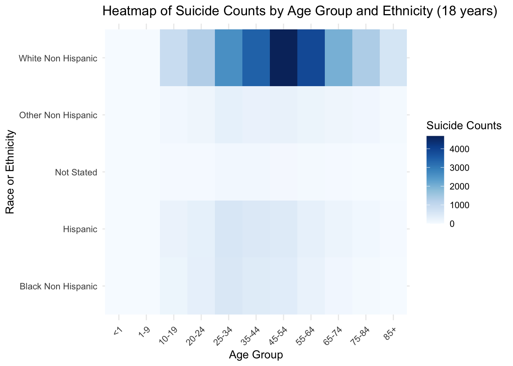
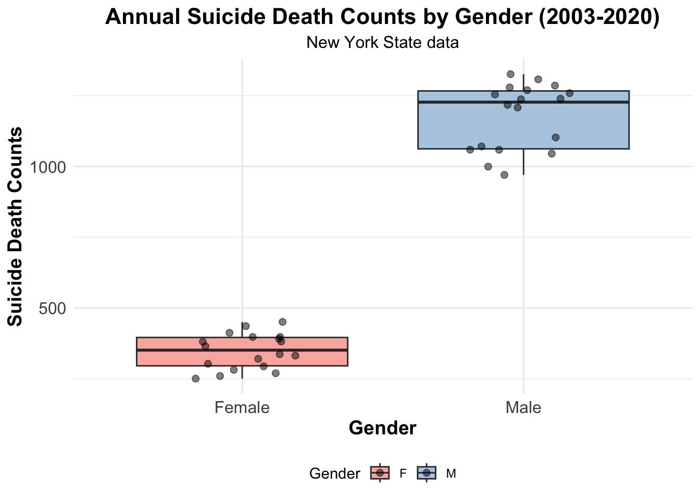
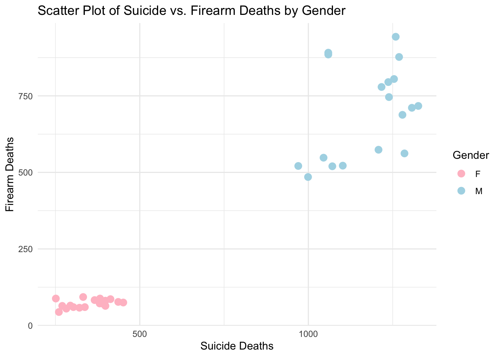
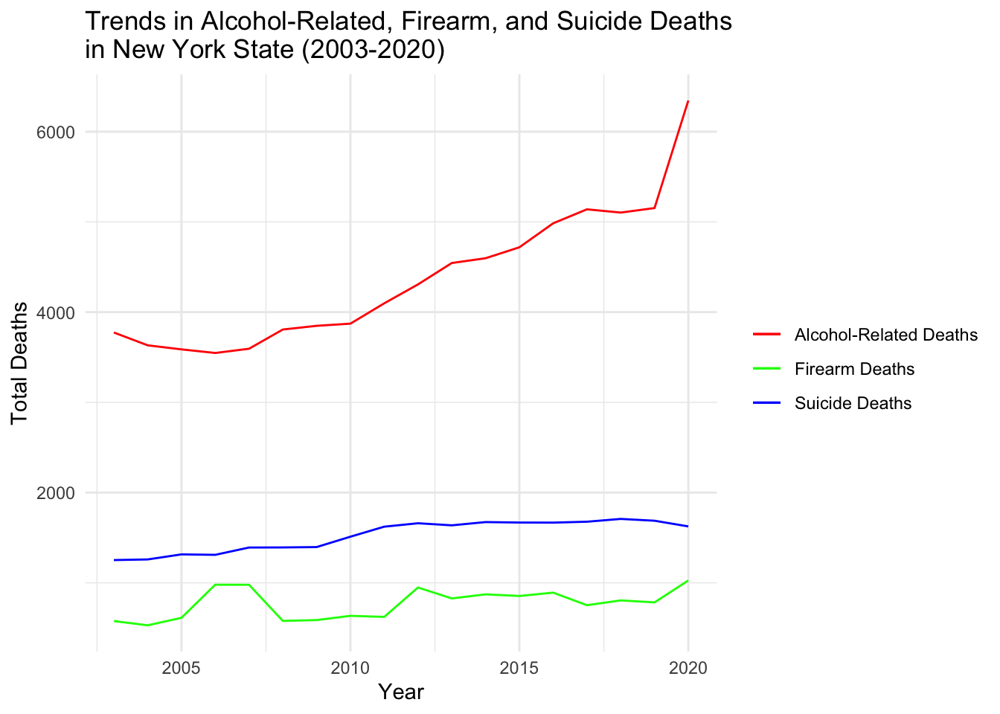
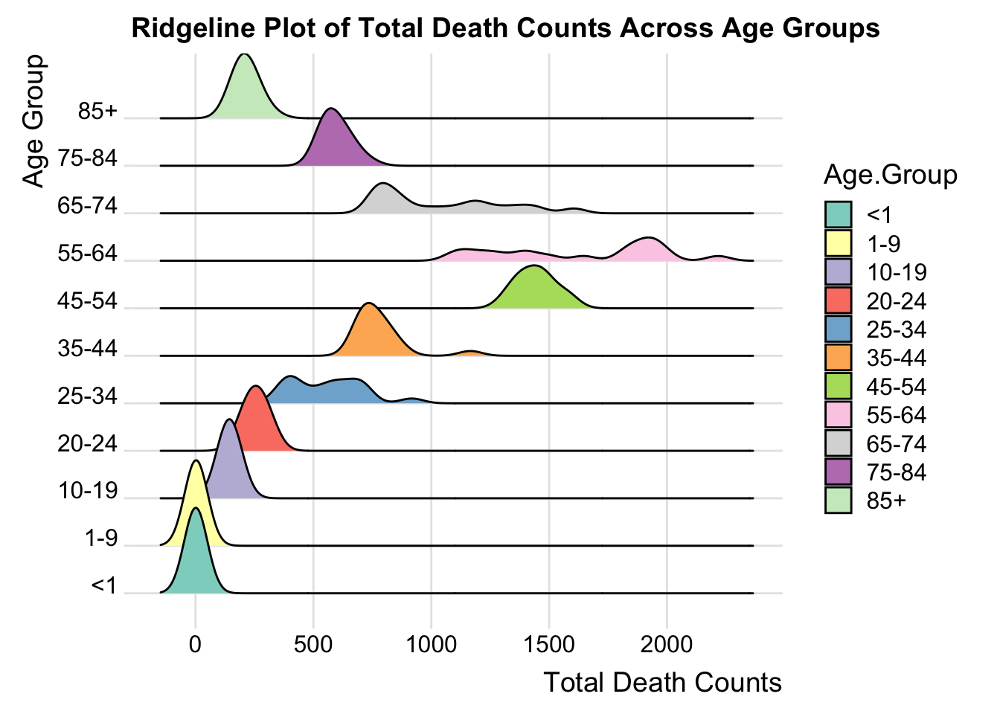

aggregated_data <- death_data %>%filter(Age.Group !='Total') %>%group_by(Race.or.Ethnicity, Age.Group) %>%summarise(Suicide.Deaths =sum(Suicide.Deaths, na.rm =TRUE))# Use melt from reshape2 to reshape the data for heatmapdata_melted <-melt(aggregated_data, id.vars =c('Race.or.Ethnicity', 'Age.Group'))# Generate the heatmapggplot(data_melted, aes(x = Age.Group, y = Race.or.Ethnicity, fill = value)) +geom_tile() +scale_fill_gradientn(colors =brewer.pal(9, "Blues")) +labs(title ="Heatmap of Suicide Counts by Age Group and Ethnicity (18 years)",x ="Age Group",y ="Race or Ethnicity",fill ="Suicide Counts") +theme_minimal() +theme(axis.text.x =element_text(angle =45, hjust =1))

Comment: The heatmap provides a visual representation of suicide counts by age group and ethnicity, with darker colors indicating higher numbers. It shows that White Non Hispanic individuals have a notably higher incidence of suicide across most age groups, particularly in the middle-aged brackets. Other ethnic groups, such as Hispanic and Black Non Hispanic, have lower counts, which are more evenly distributed across age groups. The “Not Stated” category suggests a lack of data or unreported ethnicity in some cases. The concentration of darker shades in specific age ranges may highlight critical periods where interventions could be most impactful.
Code
most_recent_year <-max(death_data$Year)data_recent_year <-subset(death_data, Year == most_recent_year & Age.Group !='Total')# Summarize suicide deaths by age group, sex, and race or ethnicitysuicide_summary <- data_recent_year %>%group_by(Age.Group, Sex, Race.or.Ethnicity) %>%summarise(Suicide_Deaths =sum(Suicide.Deaths, na.rm =TRUE))# Create a facet grid plotggplot(suicide_summary, aes(x = Age.Group, y = Suicide_Deaths, fill = Sex)) +geom_bar(stat ="identity", position =position_dodge()) +facet_wrap(~ Race.or.Ethnicity, scales ="free_y") +labs(title ="Suicide Deaths by Age, Gender, and Ethnicity (2020)",x ="Age Group",y ="Number of Suicide Deaths",fill ="Gender") +theme_minimal() +theme(axis.text.x =element_text(angle =45, hjust =1))
Comment: The bar charts depict trends of suicide deaths across different age groups and ethnicities for the year 2020, with gender comparisons. Notably, the “White Non Hispanic” category has the highest numbers, especially among middle-aged individuals. Men in this group appear particularly affected, as seen by the higher bars in comparison to women. Other ethnic groups show fewer suicide deaths, but still present a peak in middle age. The data suggests that middle age is a critical period for suicide risk, especially among White Non Hispanic men.
Code
aggregated_data_5 <- death_data %>%filter(Age.Group !='Total') %>%group_by(Year, Sex) %>%summarise(Suicide.Deaths =sum(Suicide.Deaths, na.rm =TRUE), ) %>%ungroup() # Remove the groupingggplot(aggregated_data_5, aes(x = Sex, y = Suicide.Deaths, fill = Sex)) +geom_boxplot(outlier.shape =NA) +# Hide outliersgeom_jitter(width =0.2, alpha =0.5, size =2) +# Add data points with some transparencyscale_fill_brewer(palette ="Pastel1") +# A soft color palettelabs(title ="Annual Suicide Death Counts by Gender (2003-2020)",subtitle ="New York State data",x ="Gender",y ="Suicide Death Counts",fill ="Gender" ) +theme_minimal() +# A clean themetheme(plot.title =element_text(size =16, face ="bold", hjust =0.5),plot.subtitle =element_text(size =12, hjust =0.5),legend.position ="bottom",legend.title.align =0.5,axis.text =element_text(size =12),axis.title =element_text(size =14, face ="bold") ) +scale_x_discrete(labels =c("F"="Female", "M"="Male"))

Comment: The box plot illustrates the annual suicide death counts by gender in New York State from 2003 to 2020. It reveals that males have a significantly higher number of suicide deaths annually compared to females, as indicated by the higher median value and larger spread of the data for males. The data points represented by dots show variation from year to year, with several outliers indicating years with particularly high or low counts. The consistent position of the box for males at a higher count than females suggests that this is a long-standing trend over the examined period. This visual summary underscores a gender disparity in suicide rates, with males being more affected than females.
Code
aggregated_data_6 <- death_data %>%filter(Age.Group !='Total') %>%group_by(Year, Sex) %>%summarise(Suicide.Deaths =sum(Suicide.Deaths, na.rm =TRUE),Firearm.Deaths =sum(Firearm.Deaths, na.rm =TRUE),Alcohol.Related.Deaths =sum(Alcohol.Related.Deaths, na.rm =TRUE) ) %>%ungroup() # Remove the groupingggplot(aggregated_data_6, aes(x = Suicide.Deaths, y = Firearm.Deaths, color = Sex)) +geom_point(size =3, alpha =1) +# Points with slight transparencytheme_minimal() +labs(title ="Scatter Plot of Suicide vs. Firearm Deaths by Gender",x ="Suicide Deaths",y ="Firearm Deaths",color ="Gender" ) +scale_color_manual(values =c("F"="pink", "M"="lightblue"))

Comment: The scatter plot illustrates the relationship between suicide deaths and firearm deaths by gender. It shows a clear pattern: as the number of suicide deaths increases, so do the firearm deaths, with this trend being more pronounced for males. For females, the data points are clustered at lower counts for both suicide and firearm deaths, indicating a lower occurrence of both compared to males. The plot suggests that firearms may be a common method of suicide, especially among males. This visualization highlights the gender disparity in these deaths and suggests a potential area for intervention and prevention efforts.
Code
mycolors <-c('pink', 'lightblue')aggregated_data_6$Sex <-factor(aggregated_data_6$Sex, levels =c('F', 'M'))aggregated_data_6$color <- mycolors[as.numeric(aggregated_data_6$Sex)]plot3d( x=aggregated_data_6$Suicide.Deaths, y = aggregated_data_6$Firearm.Deaths, z=aggregated_data_6$Alcohol.Related.Deaths, col = aggregated_data_6$color, type ='s', radius =50,title ="1",xlab="Suicide Deaths", ylab="Firearm Deaths", zlab="Alcohol Related Deaths")# Add a title to the plottitle3d(main ="3D Scatter Plot of Death Counts (by gender)", line =2)legend3d("topright", legend =levels(aggregated_data_6$Sex), col = mycolors, pch =16, cex =0.75)rglwidget()
Comment: The 3D scatter plot provides a comparative look at the occurrence of suicide, firearm, and alcohol-related deaths, separated by gender. The data points for males show a pronounced spread in the suicide and firearm death categories, highlighting a higher frequency and possible interrelation between these types of deaths. In contrast, female data points are more concentrated and lower in number, suggesting a lower incidence of these deaths among females. The distribution of alcohol-related deaths appears relatively similar for both genders, without a clear connection to the other types of deaths. Overall, the plot underscores a significant gender difference in patterns of death by these causes, with males showing a higher vulnerability to suicide and firearm fatalities.
3.2 Has there been a significant change in the number of suicide, firearm or alcohol-related deaths in New York State over the years?
Code
# Group data by year and summarizeannual_summary <- death_data %>%group_by(Year) %>%filter(Age.Group !='Total') %>%summarise(Suicide_Total =sum(Suicide.Deaths, na.rm =TRUE),Alcohol_Related_Total =sum(Alcohol.Related.Deaths, na.rm =TRUE),Firearm_Total =sum(Firearm.Deaths, na.rm =TRUE))# Plotting Suicide, Alcohol-Related, and Firearm Deaths Over Yearsggplot() +geom_line(data = annual_summary, aes(x = Year, y = Suicide_Total, color ="Suicide Deaths")) +geom_line(data = annual_summary, aes(x = Year, y = Alcohol_Related_Total, color ="Alcohol-Related Deaths")) +geom_line(data = annual_summary, aes(x = Year, y = Firearm_Total, color ="Firearm Deaths")) +labs(title ="Trends in Alcohol-Related, Firearm, and Suicide Deaths \nin New York State over the years",x ="Year",y ="Total Deaths") +scale_color_manual(values =c("Suicide Deaths"="blue", "Alcohol-Related Deaths"="red", "Firearm Deaths"="green")) +theme_minimal() +theme(legend.title =element_blank())

Comment: The line graph illustrates the trends in alcohol-related, firearm, and suicide deaths in New York State from 2003 to 2020. Alcohol-related deaths have seen a dramatic increase over the years, with a particularly sharp rise towards the end of the period. In comparison, firearm deaths have shown some variability but have remained relatively flat overall. Suicide deaths, while also exhibiting some fluctuation, have not changed as dramatically as alcohol-related deaths.
Code
# Reshape the data to long formatlong_data <- death_data %>%filter(Age.Group !='Total') %>%pivot_longer(cols =c("Suicide.Deaths", "Firearm.Deaths", "Alcohol.Related.Deaths"),names_to ="Category", values_to ="Deaths")# Create a stacked bar chartggplot(long_data, aes(x =as.factor(Year), y = Deaths, fill = Category)) +geom_bar(stat ="identity") +labs(title ="Stacked Histogram of Deaths by Category Over the Years",x ="Year",y ="Number of Deaths",fill ="Category") +theme_minimal() +theme(axis.text.x =element_text(angle =45, hjust =1)) # Rotate x-axis labels
Comment: The stacked histogram chart highlights the trends in deaths by category from 2003 to 2020. Alcohol-related deaths have shown a significant upward trend, particularly with a sharp rise in the year 2020. In contrast, deaths by firearms display some fluctuations but largely remain stable across the years. Suicide deaths are the least numerous and show the least variation over time. Overall, the trend indicates a worrying increase in the total number of deaths, driven mainly by alcohol-related incidents.
3.3 Which regions in New York State have the highest counts of suicide, alcohol-related, and firearm deaths?
Code
aggregated_data_4 <- death_data %>%filter(Age.Group !='Total') %>%group_by(Region, Sex) %>%summarise(Suicide.Deaths =sum(Suicide.Deaths, na.rm =TRUE),Firearm.Deaths =sum(Firearm.Deaths, na.rm =TRUE),Alcohol.Related.Deaths =sum(Alcohol.Related.Deaths, na.rm =TRUE) ) %>%ungroup() # Remove the groupingdata_long <- aggregated_data_4 %>%pivot_longer(cols =c("Suicide.Deaths", "Firearm.Deaths", "Alcohol.Related.Deaths"),names_to ="DeathType",values_to ="Count")data_long$Count <-as.numeric(data_long$Count)# Create the mosaic plot using the long format dataggplot(data_long) +geom_mosaic(aes(x =product(Sex, Region), fill = DeathType, weight = Count)) +theme_minimal() +labs(title ="Mosaic Plot of Death Counts by Gender and Region (18 years)",x ="Region",y ="Gender",fill ="Type of Death") +theme(axis.text.x =element_text(angle =45, hjust =1)) # Rotate x labels for clarity
Comment: The mosaic plot shows the distribution of different types of death counts by gender and region. For both males (M) and females (F), alcohol-related deaths are the most prevalent in both New York City (NYC) and the rest of the state (ROS). However, males have a much higher incidence of firearm deaths compared to females in both regions. This visualization highlights the gender disparity in death counts, particularly in firearm deaths, and also shows that alcohol-related deaths are a significant concern for both genders across different regions.
Code
# Adding population data for NYC and ROSnyc_population <-8770000# replace with the actual population of New York Cityros_population <-19340000-8770000# replace with the actual population of the Rest of Statedf_2020 <- death_data %>%filter(Year ==2020)# Add the population data to the dataframedf_2020$Population <-ifelse(df_2020$Region =="NYC", nyc_population, ros_population)# Calculate death rates per 100,000 populationdf_rates_2020 <- df_2020 %>%pivot_longer(cols =c("Suicide.Deaths", "Firearm.Deaths", "Alcohol.Related.Deaths"), names_to ="DeathType", values_to ="Count") %>%mutate(Rate = (Count / Population) *100000)ggplot(df_rates_2020, aes(x = Region, y = Rate, fill = DeathType)) +geom_bar(stat ="identity", position =position_dodge()) +theme_minimal() +labs(title ="Death Rates by Type and Region in New York State (2020)",x ="Region",y ="Death Rate (per 100,000 Population)",fill ="Type of Death") +scale_fill_brewer(palette ="Paired")
Comments: The bar chart compares death rates by type and region in New York State for the year 2020 (8770000 population for nyc, and 10570000 population for ros). It shows that NYC has lower death rates for all three categories compared to ROS, with the least disparity seen in firearm death rates. Suicide death rate is significantly higher in ROS compared to NYC. The chart suggests that the type of death most common in each region is alchohol-related deaths, with NYC showing a much lower rate of alchohol-related and suicide deaths than ROS. The data indicates that living outside of the city correlates with a higher likelihood of death from these causes. This suggests that there may be environmental, social, or access-related factors contributing to these regional differences in death rates
3.4 How have mortality patterns by age and race, specifically related to suicide, firearm, and alcohol-related deaths, changed in New York State over the years?
Code
# Calculate the total death countdeath_data$Total_Deaths <-rowSums(death_data[, c("Suicide.Deaths", "Alcohol.Related.Deaths", "Firearm.Deaths")], na.rm =TRUE)long_data <- death_data %>%filter(Age.Group !='Total') %>%select(Year, Age.Group, Total_Deaths) %>%group_by(Year, Age.Group) %>%summarise(Total_Deaths =sum(Total_Deaths, na.rm =TRUE)) %>%ungroup()# ridgeline plotggplot(long_data, aes(x = Total_Deaths, y = Age.Group, fill = Age.Group)) +geom_density_ridges() +labs(title ="Ridgeline Plot of Total Death Counts Across Age Groups",x ="Total Death Counts",y ="Age Group") +scale_fill_brewer(palette ="Set3") +# Use a discrete color scaletheme_ridges(grid =TRUE)

Comment: The ridgeline plot visualizes the distribution of annually death counts across age groups over the years 2003 to 2020. From the plot, we observe that the age groups ‘45-54’ and ‘55-64’ have the most substantial death counts, suggesting a higher unnatural death rate in these middle-aged brackets. The distributions are broader for these age groups, indicating a more significant variance in the number of deaths year over year. In contrast, the younger and older age groups exhibit fewer deaths, with narrower distributions, which points to less variability and lower overall death counts.
Code
aggregated_data_3 <- death_data %>%filter(Age.Group !='Total') %>%group_by(Race.or.Ethnicity) %>%summarise(Suicide.Deaths =sum(Suicide.Deaths, na.rm =TRUE),Firearm.Deaths =sum(Firearm.Deaths, na.rm =TRUE),Alcohol.Related.Deaths =sum(Alcohol.Related.Deaths, na.rm =TRUE) ) %>%ungroup() normalized_data <-as.data.frame(scale(aggregated_data_3[,-1]))colnames(normalized_data) <-colnames(aggregated_data_3)[2:ncol(aggregated_data_3)]normalized_data$Race.or.Ethnicity <- aggregated_data_3$Race.or.Ethnicityggparcoord(normalized_data,columns =1:3, groupColumn ='Race.or.Ethnicity', # Grouping by race or ethnicityscale ="globalminmax", # Normalize the variables globallymapping =aes(color = Race.or.Ethnicity)) +theme_minimal() +labs(title ="Parallel Coordinate Plot of Death Counts by Race (18 Years)",x ="Type of Death",y ="Normalized Death Counts") +theme(axis.text.x =element_text(angle =45, hjust =1)) +scale_color_brewer(palette ="Set1")
Comment: The parallel coordinate plot compares normalized death counts across different types of deaths — suicide, firearm, and alcohol-related — among various racial and ethnic groups. The White Non Hispanic group has the highest normalized counts for all three types of death. Black Non Hispanic individuals show a peak in firearm deaths compared to other causes of death. Hispanic and Other Non Hispanic groups appear to have lower or more evenly distributed death counts across all three categories. The ‘Not Stated’ category has the lowest values, which could reflect underreporting or data collection issues within these populations.